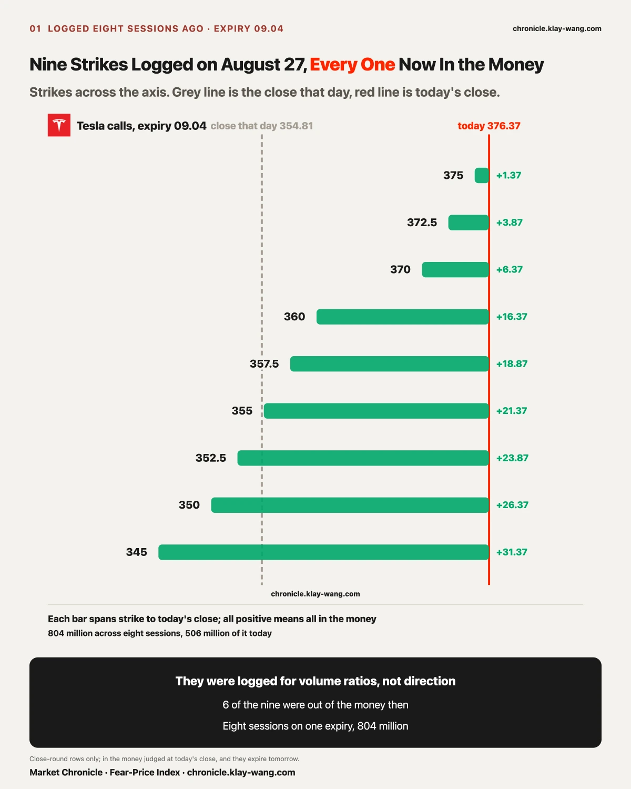
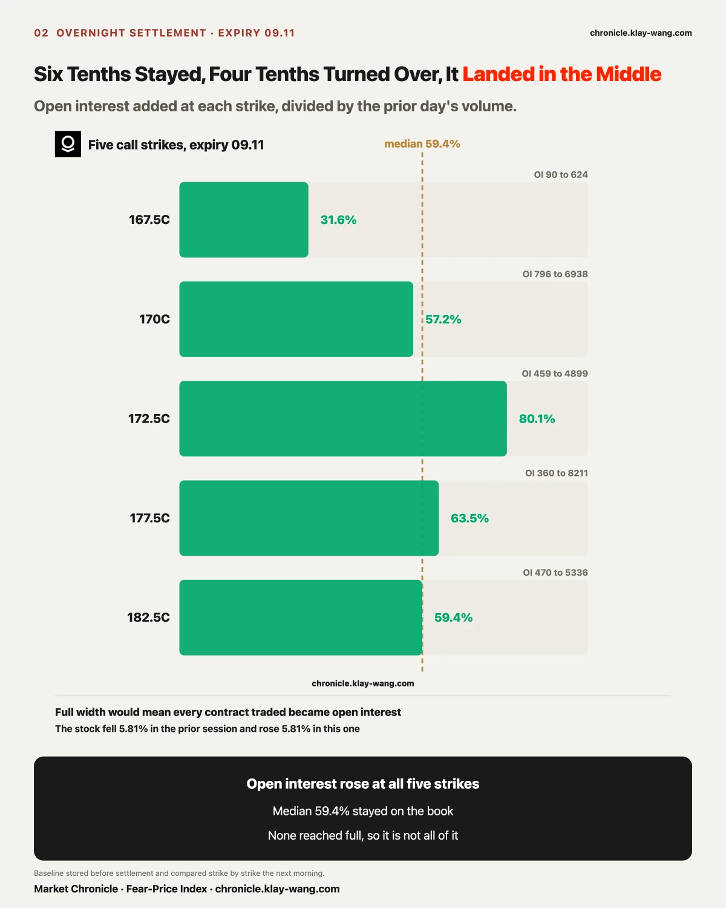
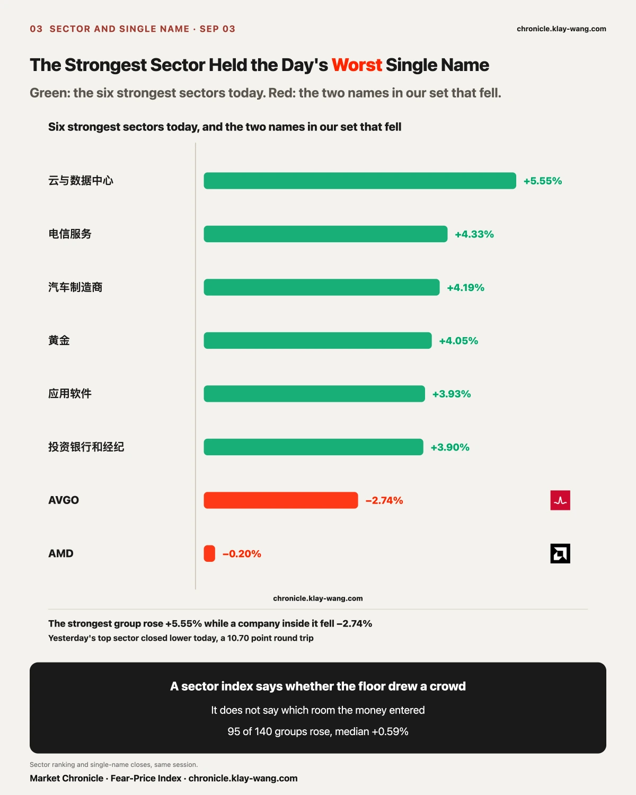
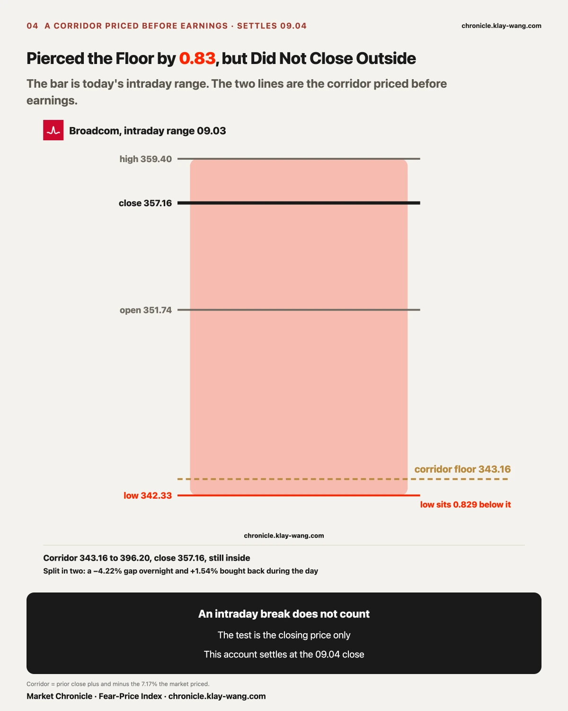
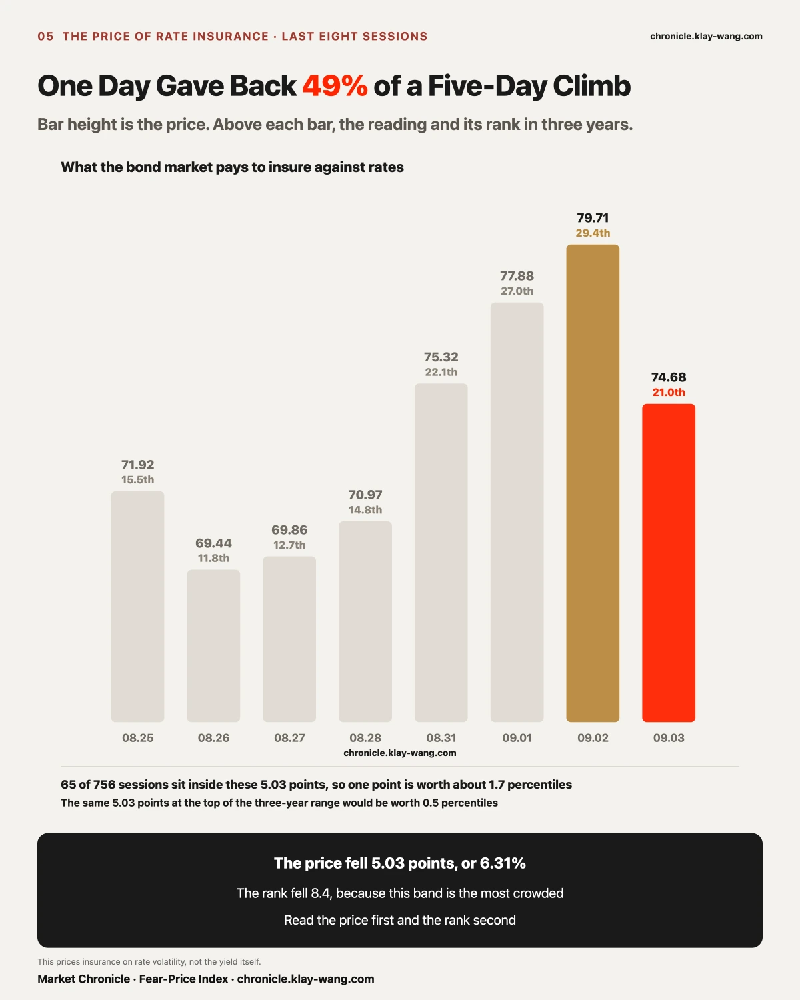
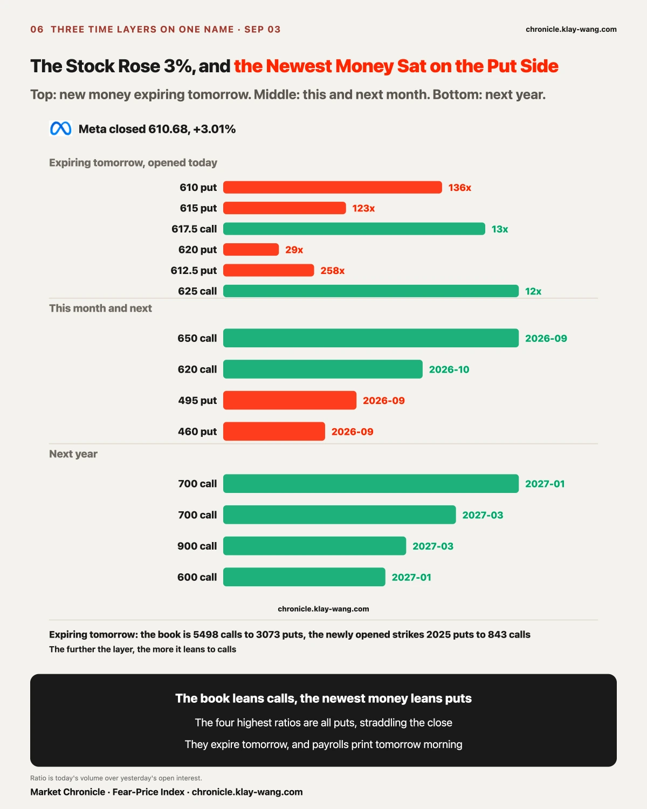
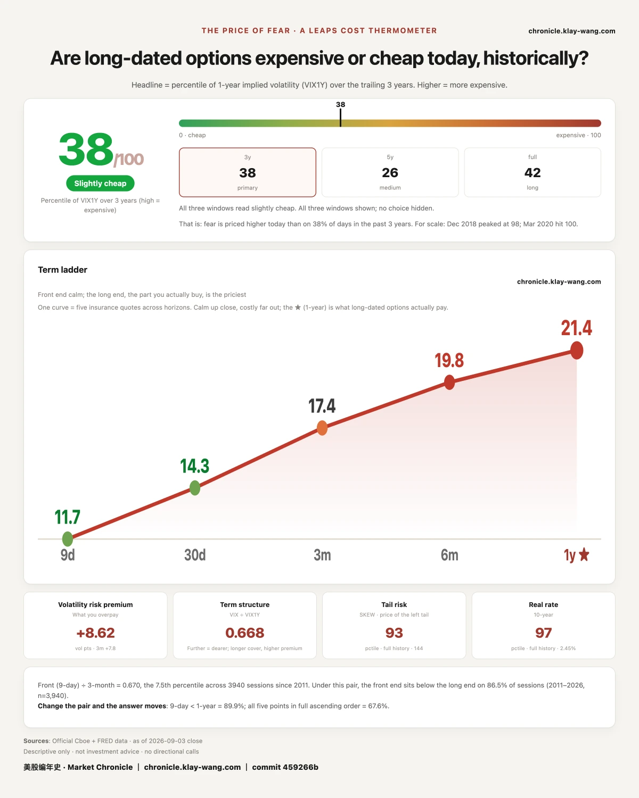

One. On 08.27 we logged nine Tesla strikes expiring 09.04, on a day the stock closed 354.81. It closed 376.37 today, and eight of those nine are now worth more than what was paid for them. They expire tomorrow.
Two. The Palantir calls that came in on 09.02 settled this morning with open interest up at all five strikes, a median of six tenths staying on the book. Volume can only ask the question. Overnight open interest answers it.
Three. The rate-insurance gauge turned after five days up, falling 6.31% in one session and giving back half the climb. Read the price first and the rank second, or an ordinary pullback reads like an event.

August 27. We logged nine strikes.
Tesla closed 354.81 that day. Our unusual-activity table logged nine strikes expiring 09.04: 345, 350, 352.5, 355, 357.5, 360, 370, 372.5 and 375.
Six of the nine sat above 354.81. Buying those six meant paying for Tesla to climb past that level within a week, with nothing back if it did not. We logged them for one reason only: volume at those strikes was abnormally large, and 372.5 traded 19.77 times the prior day's open interest.
September 1. We published that this expiry carried 101.5 million.
The stock closed 356.09. Of the 101.5 million riding on 09.04, 55.59 million sat on puts and 45.86 million on calls. More money on the downside than the upside that day.
September 2. The same expiry gained half again as much money and switched sides.
The stock closed 357.01. That same 09.04 bucket went from 101.5 million to 255.8 million, now 163.4 million on calls against 92.35 million on puts. A hundred and fifty million arrived in a single session, and the lean flipped from down to up. What we wrote then: yesterday's money bought 09.02, today's money buys the stretch after the launch event.
September 3, today. It closed 376.37, up 5.42%.
The reconciliation. A contract's traded price that day times one hundred is what was paid. Today's close minus the strike, times one hundred, is what the contract is worth on hard terms.
Of the nine logged on August 27, eight are now worth more than what was paid. The 345 strike cost 1432 dollars a contract and is worth 3137. The 350 cost 1113 and is worth 2637. The 370 cost 325 and is worth 637. Only the highest, 375, sits 92 dollars below its cost.
Of the sixteen logged on September 2, fourteen have cleared their cost. Of the fourteen logged on September 1, nine have, and the five above 380 are still at zero.
Tomorrow is that Friday. These contracts expire 09.04. On expiry the time value goes to zero and only the close minus the strike remains. Whatever is in the money today goes to zero all the same if the stock falls back tomorrow.
Three boundaries.
One, in the money does not mean profitable. The figures above are the floor value at expiry, not the current market price. Whether anyone actually made money is today's market price minus the original cost.
Two, what was paid decides everything. On the same day, 345 cost 1432 and 375 cost 229. The same move in the stock produces completely different outcomes for the two.
Three, the price of the insurance itself matters, meaning volatility. These were bought on August 27, when Tesla's 30-day implied volatility was 40.09, the 8th percentile of its own year, cheap, so volatility did not eat them. The opposite is far more common: bought when insurance is most expensive ahead of an event, a buyer can be right on direction, finish in the money, and still lose once implied volatility collapses. Being right on direction and making money are separated by a cost.
We do not give direction and we do not decide for anyone. We record who paid, how much, and for which date. Whether it lines up, go back and check yourself.

Volume is how many contracts changed hands in a session. Open interest is how many are still unclosed at the bell. The first is flow, the second is inventory.
Palantir fell 5.81% during the 09.02 session. On that same day, five call strikes expiring nine days out on 09.11 traded heavily, each at somewhere between ten and thirty times the prior day's inventory.
That multiple cannot be judged on the day. Opened and closed within the session, or genuinely opened and left on the table, look identical at the bell. Only the next morning's settled inventory separates them.
This morning it settled: inventory rose at all five strikes. Dividing the added inventory by the prior day's volume gives the share that stayed: 31.6%, 57.2%, 80.1%, 63.5% and 59.4%.
Six tenths stayed, four tenths was a round trip. Not all gone, not all held. It landed in the middle, so we write the middle.
It closed 182.53 today, up 7.71%. Split in two, the overnight gap contributed only 1.79% and the daytime session bought it up 5.81%. On 09.02 it fell exactly 5.81% on the day. The same number, one direction each day.

Cloud and data centres led everything today, up 5.55%. That is the layer we named in the last issue, where we wrote that everything beaten the day before had bounced and only the compute layer had not. It bounced today, moving 7.60 points between the two sessions.
Pull the lens from the sector to the company and the picture inverts. Inside that same layer, Broadcom, fresh off earnings, closed down 2.74%, one of only two decliners among the 21 names we track.
A sector index tells you whether the floor drew a crowd. It does not tell you which room the money entered. Ninety-five of 140 groups rose, median 0.60%. On the same day, anyone on the right floor and in the wrong room made nothing.
The rotation is just as clean. Marine ports, yesterday's best sector, fell 2.00% today, a 10.70 point round trip across two sessions.

Before the results, the options market put a price on the night: the most likely move was 7.17% either way. That number is backed out of what the contracts actually traded for, so what buyers were willing to pay for protection equals how far the market thought it would go. Applied to the prior close, that gives a corridor from 343.16 to 396.20. Inside means the event landed within what the market had priced. Outside means the market underpriced it.
It opened 351.74 today and traded as low as 342.331, 0.829 dollars below the corridor floor, then closed 357.16, back inside. Split in two: a 4.22% gap down overnight and 1.54% bought back during the day.
This does not count as a break. The test is the closing price, and this account settles on 09.04. What today records is one thing only: a boundary priced before the results was pierced intraday and taken back.

Yesterday we wrote that the hike story had reached day three and the panic buyers still had not shown. The rate-insurance gauge was then on its fifth day up at 79.71.
Today it turned, reading 74.68, down 5.03 points or 6.31% in a session. The five-day climb was 10.27 points, so one day gave back 49% of it.
It also slid from the 29.4th percentile of three years to the 21.0th, a drop of 8.4. A percentile and a magnitude are two different things. Inside the 5.03 points between 74.68 and 79.71 sit 65 of the last 756 sessions, 8.6% of the window. In that band one point is worth about 1.7 percentiles. The same 5.03 points at the top of the three-year range would be worth 0.5.
So the correct reading is this: the price fell 6.31%, which is the fact; the rank fell 8.4, because it happens to sit in the most crowded part of the distribution. Price first, rank second. Reverse the order and an ordinary pullback reads like an event.
This gauge prices insurance on rate volatility, not the yield itself. We do not carry our own daily series for the ten-year yield, so we publish no level for it here. What we do carry daily are the long, intermediate and short Treasury funds, which rose 0.15%, 0.30% and 0.10% today, the longer the more.
One account carried for two issues moved today. On August 31 we logged a split between 30-day and one-year implied volatility, with 18 of 21 names rising at 30 days and only 10 at one year. Today it reversed: eleven rose at 30 days and thirteen at one year. The test written then was that if the one-year count overtook the 30-day count, that split was an event-driven artefact. It triggered today, and by our own test that reading is withdrawn.

The company released a new AI model on 09.02 and the stock rose 3.01% to close at 610.68. There was no bad news.
Split its options into three layers and the shape is wrong.
First layer, expiring tomorrow. The book leans to calls, 55.0 million against 30.7 million. Pick out only the strikes opened today and the direction inverts: the four highest ratios of volume to prior inventory are all puts, struck right around today's close. The 612.5 strike held 25 contracts yesterday and traded 258 times that today. The 610 strike, 136 times. The 615 strike, 123 times.
Second layer, this month and next. The largest single line is 8198 contracts of the 650 calls expiring 09.18, alongside puts at 495 and 460.
Third layer, next year. All calls, and the strikes keep climbing: 700 for January 2027, then 700 and 900 for March.
Put the three layers together and the shape is this: the further out, the more it leans to calls; the nearer, the more it leans to puts.
Only what we can measure. Payrolls print tomorrow morning, and those puts struck around the current price expire exactly across it. Someone willing to insure tomorrow and someone who thinks this company is worth 900 next year can be the same person or two entirely different crowds. Premium tells you which side the money sits on. It does not tell you what those people are betting. Every contract has a buyer and a seller, and heavy money on the put side can be protection bought or protection sold for income.
One thing is certain: on a day with no bad news and a 3% gain, the put side expiring tomorrow drew tens to hundreds of times the prior day's inventory in new volume.
Broad index funds: 95 of 140 groups rose, median 0.60%, while small caps added only 0.40%. Breadth was decent and the weight was at the large end.
Tesla: tonight's launch event is not in today's close, because it starts after the bell. The 09.04 bucket expires tomorrow and the winning side is wherever the close lands.
Broadcom: the corridor is 343.16 to 396.20, and the 09.04 close inside or outside is the settlement of that account.
Palantir: six tenths of the new positions from 09.02 stayed, and their window runs only to 09.11.
The two memory names: up 0.22% and 0.10% on a day 19 of 21 rose. Standing still is itself a reading.
The implications are laid out. What to do with them is each person's own account.
One. A volume multiple can only ask the question; overnight open interest answers it. Thirty times volume and a same-day round trip look identical at the bell.
Two. Logging unusual activity records that someone paid. Those nine strikes on August 27 were logged for their volume multiple, with nothing to do with direction.
Three. A sector index says whether the floor drew a crowd, not which room the money entered. The strongest sector can hold the day's worst company.
Broadcom's corridor runs 343.16 to 396.20 and only the close counts. Tesla's 09.04 bucket carries 163.4 million on calls against 92.3 million on puts, and the winning side is wherever the close lands.

One more gauge prices what the equity market pays to insure the year ahead. It reads 38.1 today against 35.8 yesterday.
Price first, rank second, the same rule used in the bond section above. One-year implied volatility rose from 21.24 to 21.43, a move of 0.19, while the rank shifted 2.3. The same mechanism again: it sits in a dense part of the distribution, so the rank moves more than the price.
The shape of the five tenors is what matters. Nine-day fell from 12.57 to 11.68, 30-day from 15.20 to 14.32, three-month from 17.73 to 17.42, six-month from 20.36 to 19.78. All four near tenors got cheaper, and only the one-year rose, from 21.24 to 21.43.
Payrolls print tomorrow morning. The market did not mark up tomorrow. It marked up the year ahead. The nearest tenor fell the most, 0.89 in a session, while the furthest was the only one lifted. Fewer people are paying for tomorrow and more are paying for a year out.
Put the two gauges side by side: the bond gauge fell 6.31% today, while the equity gauge got cheaper at the front and more expensive at the back. The two markets agree about tomorrow and disagree about the year ahead.
Fear-Price Index · 2026-09-03 · reading 38.1/100: one-year implied volatility VIX1Y at 21.43,
the 38.1st percentile of three years, where higher means more expensive. Daily ledger and definitions at chronicle.klay-wang.com · Credit: Fear-Price Index · Market Chronicle
Options flow and single names, daily → chronicle.klay-wang.com/options
Gauge readings and both ledgers → chronicle.klay-wang.com